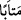

Râğıb der ki: “
” tam tevbe etmek, demektir. Tam tevbe ise çirkin olanı terk ile
güzel olanı arayıp araştırma fiilini birleştirmektir.”
Bu âyet, tahsisten sonra ta‘mîm/genelleştirme ifâde eder. Çünkü önceki âyetteki tevbe
sadece şirk, kâtil ve zina ile; burada ise bütün günahlarla ilgilidir.
Şerîatta tevbe; çirkin olduğu için günahı terk etmek, yaptığı hatâlara pişman olmak,
günahlara dönmeme konusunda azmetmek ve iâde etmekle telâfisi mümkün olanları
telâfî etmektir. Bu dört husus ne zaman bir araya gelirse, tevbenin şartları tam olmuş
olur.
Molla Câmî der ki:
İnsanlar arasında tevbeden dem vururum, gönül ise günahta ısrarlı
Benim böyle yoldan çıkmış birisi olduğumu kimse anlamıyor
İbn Atâ der ki: “Tevbe, her kötü ahlâktan dönmek ve her iyi ahlâkla ahlâklanmaktır.”
Bu havâssın tevbesidir. Bazıları “Tevbe Allah’ın dışındaki her şeyden tevbe
etmek/vazgeçmektir” der. Bu da ehassın/Allah’ın has kullarının seçkinlerinin tevbesidir.
Şu halde tevbe ve istiğfara sarıl. Çünkü onlar günahların sabunudur. Kudsî bir hadîste
Allah Teâlâ şöyle buyurur: “Günahkârların (tevbe ederken çıkardıkları) iniltileri
bana tesbih edenlerin seslerinden daha sevimlidir.”[264] Günahlarda ısrar etmek
Allah’a ortak koşmaya ve İslam’dan başka bir din üzere ölüme sebep olur.
Ebû İshâk der ki: “Yüzünün yarısı örtülü bir adam gördüm. Sebebini sordum, şöyle
dedi: “Ben kefen soyan bir kimseydim. Bir gece bir kadının kabrini açtım da bana tokat
attı.” Adamın yüzünde parmak izleri vardı. Ben bu hâdiseyi Evzâî’ye bir mektubla
haber verdim. O da bana: “O adama sor bakalım, kabirdeki insanları nasıl bulmuş?”
diye bir mektup yazdı. Ben de sordum. Adam: “Çoğunu yüzü kıbleden çevrilmiş
buldum.” dedi. Evzâî onlar hakkında şöyle demiştir: “Onlar İslam’dan başka din üzere
ölen kimselerdir.” Yâni günahlardaki ısrarları, onları küfre kadar götürmüştür. Bundan
Allah Teâlâ’ya sığınırız.
Usûl-i fıkıhta yasaklanan bir şeyi işlemek, emredileni terk etmekten daha şiddetli bir
günahtır. Bununla birlikte İblis reddedilmiş, Âdem ise makbul olmuştur. Çünkü Âdem
tevbe edip makbul olmuş, İblis ise günahında ısrar etmiş, büyüklük taslamış ve
reddedilmiştir.
Mesnevî’de der ki:
Tevbenin batı yönündeki kapısı
Kıyâmete dek insanlara açıktır
Güneş batıdan doğuncaya dek
O kapı açık olur; ondan yüz çevirme
Cennetin de rahmetten sekiz kapısı vardır;
Ey oğul, o sekiz kapıdan biri de tevbe kapısıdır